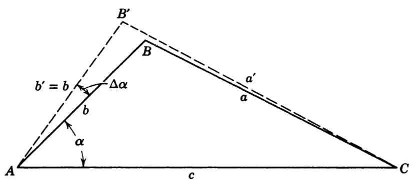

a. “误差演算”
所谓“误差演算”，不过是把微分学的一个基本事实用于数值计算。如果函数 f(x) 有足够多阶的导数，那么在一点的邻域内，用一次函数来表示它，误差比一阶更高；用二次函数来表示它，误差比二阶更高，依此类推。
先来考察函数 y=f(x) 的线性近似。若 y+Δy=f(x+Δx)=f(x+h)，由泰勒定理有
Δy=hf′(x)+2h2f′′(ξ),其中 ξ=x+θh（0<θ<1）是一个中间值，无须知道得更精确。当 h=Δx 很小时，可得实用的近似式
Δy≈hf′(x).这样，我们用导数代替与它近似相等的差商，用 h 的一次式代替与它近似相等的 y 的增量。
这一简单事实可以这样用于计算。设两个物理量 x 和 y 由关系 y=f(x) 联系起来，可以问，测量 x 时的一点偏差会对所求的 y 产生什么影响？若用不准确的值 x+h 代替“真”值 x，则对应的 y 与真值 y=f(x) 相差 Δy=f(x+h)−f(x)，因而可以用上式近似求出这个误差。
下面举例说明这类线性近似的用处。
例 (a) 在三角形 ABC 中（图 6.3），假设边 b 和 c 测得很准，而角 α=x 的测量误差只能保证 ∣Δx∣<δ。这会给第三边 y=a=b2+c2−2bccosα 的值带来多大的误差？
由于 Δa≈(bcsinαΔα)/a，百分误差为
a100Δa≈a2100bcsinαΔα.例如，取 b=400 米、c=500 米、α=60∘，则 y=a=458.2576 米，从而
Δa≈458.2576200000×213Δα.若测角误差在 10 角秒以内，即在最不利的情形下取
Δα=10′′=4846×10−8 rad,则至多约有 Δa≈1.83 cm 的误差，百分误差至多约为 0.004%。

图 6.3 测角误差对第三边的影响
例 (b) 下例说明线性化怎样用于物理问题。
由实验知道，若金属杆在温度 t0 时的长度为 l0，那么在温度 t 时，它的长度为 l=l0(1+α(t−t0))，其中 α 只与 t0 和杆的材料有关。假若一座摆钟在温度 t0 时走得准确，升温到 t1 后，它每天会慢几秒？
振动周期 T(l) 满足（见第 411 页）
T(l)=2πgl,从而dldT=lgπ.如果杆长变化 Δl，周期就相应改变
ΔT≈l0gπΔl,其中 l1=l0(1+α(t1−t0))，Δl=αl0(t1−t0)。这就是每振动一次钟所慢的时间。每秒慢 ΔT/T≈Δl/2l0，故一天慢 43,200Δl/l0=43,200α(t1−t0) 秒。
在本例以及许多类似的问题中，只要所考察的函数是几个因子的乘积，就可以先对等式两边取对数，再求导，以简化计算。本例中有
logT=log2π−21logg+21logl.求导得
T1dldT=2l1.用 ΔT/Δl 代替 dT/dl，得到
TΔT=2lΔl,与先前的结果一致。
译者注 最后一个等号是在线性近似下写的。若摆长有一个小的相对增量，摆动周期的相对增量约为它的一半。一天共有 86400 秒，因而折算成一天慢走的秒数时，系数是 86400/2=43200。
*b. π 的计算
下面是另一类经典例子，用到一些特意设计的技巧，尽管现代计算机或许已使它们失去实际用途。
用反正切的级数展开所得的莱布尼茨级数 π/4=1−31+51−71+⋯（第 5.2 节第 445 页式 (7)），由于收敛极慢，并不适合用来计算 π。不过，稍加变通，计算就容易多了。在正切的加法定理
tan(α+β)=1−tanαtanβtanα+tanβ中引入反函数，取 α=arctanu、β=arctanv，便得
arctanu+arctanv=arctan(1−uvu+v).现在选择 u,v，使 (u+v)/(1−uv)=1，右端就等于 π/4。如果 u 和 v 都很小，左端便容易用已知的级数计算。例如像欧拉那样取 u=21、v=31，得
4π=arctan21+arctan31.(9)再注意到
1−21131+71=21,就有 arctan21=arctan31+arctan71，故由式 (9) 得
4π=2arctan31+arctan71.维加用这个公式把 π 算到了 140 位。再利用 (51+81)/(1−401)=31，便得
arctan31=arctan51+arctan81,即
4π=2arctan51+arctan71+2arctan81.这个展开式非常适合与级数 arctanx=x−x3/3+x5/5−⋯ 配合起来计算 π。代入的 x 只取 51、71 或 81，各项衰减得很快，只需寥寥几项就有很高的精度。
对这些巧妙而颇有人工痕迹的变换不特别感兴趣的读者，领会其中的原理也就够了。
*c. 对数的计算
为了数值计算对数，在对数级数（第 444 页式 (5)）
21log1−x1+x=x+3x3+5x5+⋯,0<x<1,中作代换
1−x1+x=p2−1p2,x=2p2−11,便得到级数
logp=21log(p−1)+21log(p+1)+2p2−11+3(2p2−1)31+⋯,其中 2p2−1>1，即 p2>1。若 p 是整数，且 p+1 可以分解为较小的整数因子（例如 p+1 是偶数），这后一公式便把 p 的对数表示为较小整数的对数与一个级数之和。级数各项衰减极快，所以只取少数几项就足以把和算得相当准确。因此，只要已经求出 log2（例如像第 489 页那样用它的积分表示来算），便可依次算出每个素数的对数，进而算出任何数的对数。
要估计这样求得的 logp 的精度，用几何级数比用一般的余项公式更简单。设 Rn 为级数在 1/[n(2p2−1)n] 这一项以后的各项之和，则
Rn<(n+2)(2p2−1)n+21(1+(2p2−1)21+(2p2−1)41+⋯)=(n+2)(2p2−1)n1⋅(2p2−1)2−11.这个公式立刻给出所需的误差估计。
例如，假设已知 log2 和 log3 的数值，让我们用级数的前四项求 loge7。这里
p=7,2p2−1=97,log7=2log2+21log3+971+3⋅9731+⋯,971≈0.01030928,3⋅9731≈0.00000037,2log2≈1.38629436,21log3≈0.54930614.从而 loge7≈1.94591015。估计误差，得到
Rn<5⋅9731×972−11<36×1091.不过，所加的四个数，每个都只能保证误差在 5×10−9 以内，所以 log7 的计算结果，最后一位可能相差 2。事实上，最后一位也算对了。